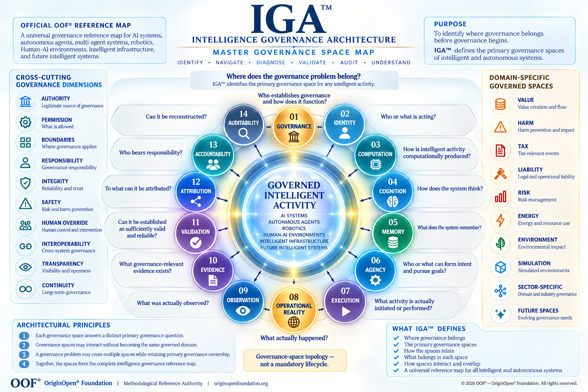

IGA™ Architecture Map
Intelligence Governance Architecture
Official OOF® Master Governance Space Reference Map for Intelligent and Autonomous Systems

IGA™ (Intelligence Governance Architecture) serves as the official OOF® master governance reference map used to identify, distinguish, classify, navigate, diagnose, relate, validate, and audit the primary governance spaces of intelligent and autonomous systems.
IGA™ applies across AI systems, autonomous agents, multi-agent systems, robotics, Human-AI environments, intelligent infrastructure, cognitive automation, autonomous organizations, and future intelligent systems.
IGA™ does not define a specific technology, model, vendor, platform, implementation, computational paradigm, or intelligence architecture.
IGA™ defines where governance belongs.
Its purpose is to identify the primary governance space of a problem before deeper governance begins.
Core Reference Question
Where does the governance problem belong?
IGA™ provides the master diagnostic topology through which governance questions can be located within distinct governed spaces without treating intelligent systems as a single governance domain.
Master Governance Space Principle
Every primary governance space answers a distinct governance question.
Governance spaces may interact without becoming the same governed domain.
A governance problem may cross multiple spaces while retaining primary governance ownership.
Cross-space interaction does not automatically transfer governance ownership.
Together, the primary spaces form the IGA™ intelligence governance reference map.
IGA™ defines governance-space topology — not a mandatory lifecycle.
Official IGA™ Master Governance Space Map
01 — Governance
Core Question
Who establishes governance and how does it function?
Canonical Definition
Governance defines the legitimate structures, authorities, boundaries, scopes, delegations, responsibilities, controls, continuity conditions, and interoperability mechanisms through which governance is established and maintained.
Governed Space
Governance
Primary Function
Establish the governance conditions within which intelligent and autonomous activity may be governed.
02 — Identity
Core Question
Who or what is acting?
Canonical Definition
Identity defines the conditions through which an actor, system, agent, organization, operational persona, or other governed entity can be uniquely distinguished, persistently referenced, traced, and connected to legitimate origin and continuity.
Governed Space
Identity
Primary Function
Establish who or what participates in governed intelligent activity.
03 — Computation
Core Question
How is intelligent activity computationally produced?
Canonical Definition
Computation defines the computational processes and mechanisms through which intelligent-system states, outputs, capabilities, or computational results are produced.
Governed Space
Computation
Primary Function
Distinguish the computational production of intelligent activity from cognition, agency, and operational execution.
Canonical Boundary
Computation ≠ Cognition
IGA™ remains computationally technology-neutral and does not assume that intelligence must depend on neural networks or any other specific computational paradigm.
04 — Cognition
Core Question
How does the system think?
Canonical Definition
Cognition defines the governance space in which information becomes interpretation, reasoning, understanding, contextualization, reality modelling, inference, or cognitive decision formation.
Governed Space
Cognition
Primary Function
Identify where intelligent processing becomes cognitively meaningful.
Canonical Boundary
Computation ≠ Cognition
Cognition ≠ Agency
05 — Memory
Core Question
What does the system remember?
Canonical Definition
Memory defines the governance space in which information, state, experience, knowledge, context, or other governed memory objects are formed, retained, retrieved, modified, traced, preserved, or made available to future intelligent activity.
Governed Space
Memory
Primary Function
Determine what persists and what may influence future cognition, decisions, agency, or activity.
06 — Agency
Core Question
Who or what can form intent and pursue goals?
Canonical Definition
Agency defines the governance space in which an intelligent actor or system forms intent, establishes or pursues goals, plans activity, selects actions, coordinates activity, uses tools, or delegates activity.
Governed Space
Agency
Primary Function
Distinguish goal-directed agency from cognition and actual execution.
Canonical Boundary
Cognition ≠ Agency
Agency ≠ Execution
07 — Execution
Core Question
What activity is actually initiated or performed?
Canonical Definition
Execution defines the governance space in which intended, selected, delegated, or authorized activity becomes an initiated, attempted, or performed action.
Governed Space
Execution
Primary Function
Establish what activity moved from intention, decision, planning, or authorization into execution.
Canonical Boundary
Decision ≠ Action
Agency ≠ Execution
Execution ≠ Operational Outcome
08 — Operational Reality
Core Question
What actually happened?
Canonical Definition
Operational Reality defines the actual states, events, interactions, effects, consequences, outputs, and outcomes that occur when intelligent activity interacts with operational environments.
Governed Space
Operational Reality
Primary Function
Provide the actual operational reference point against which intended, predicted, reported, or assumed outcomes may be examined.
Canonical Boundary
Action ≠ Outcome
Reality ≠ Observation
Canonical Principle
Operational Reality remains the final reference point for what actually occurred.
09 — Observation
Core Question
What was actually observed?
Canonical Definition
Observation defines the governance space in which aspects of Operational Reality are detected, measured, recorded, reported, sensed, or otherwise perceived.
Governed Space
Observation
Primary Function
Distinguish what occurred in Operational Reality from what systems or observers were capable of observing.
Canonical Boundary
Reality ≠ Observation
Observation ≠ Evidence
10 — Evidence
Core Question
What governance-relevant evidence exists?
Canonical Definition
Evidence defines the governance space in which data, records, traces, observations, artifacts, provenance information, or other materials become relevant to a governance question or determination.
Governed Space
Evidence
Primary Function
Establish what information or material can support governance examination.
Canonical Boundary
Observation ≠ Evidence
Evidence ≠ Validation
11 — Validation
Core Question
Can it be established as sufficiently valid and reliable?
Canonical Definition
Validation defines the governance space in which relevant claims, states, observations, evidence, or conditions are examined to determine whether they are sufficiently valid, reliable, authentic, relevant, complete, and contextually appropriate for the governance determination being made.
Governed Space
Validation
Primary Function
Determine what governance may responsibly rely upon.
Canonical Boundary
Evidence ≠ Validation
12 — Attribution
Core Question
To what can it be attributed?
Canonical Definition
Attribution defines the governance space in which relevant activity, decisions, actions, events, effects, or consequences are connected, where establishable, to identifiable actors, systems, agents, authorities, decisions, or other governed entities.
Governed Space
Attribution
Primary Function
Establish relevant attribution without forcing certainty where available evidence cannot support it.
Canonical Condition
Attribution — Where Establishable
Canonical Boundary
Attribution ≠ Accountability
13 — Accountability
Core Question
Who bears responsibility?
Canonical Definition
Accountability defines the governance space in which responsibility for governed authority, decisions, actions, relationships, systems, failures, interventions, or consequences is established and maintained.
Governed Space
Accountability
Primary Function
Determine who bears what governance responsibility and under which governance relationship.
Canonical Boundary
Attribution ≠ Accountability
14 — Auditability
Core Question
Can it be reconstructed?
Canonical Definition
Auditability defines the governance space in which relevant intelligent activity, governance decisions, authority, evidence, actions, Operational Reality, validation, attribution, and accountability can be traced, reconstructed, examined, and audited.
Governed Space
Auditability
Primary Function
Preserve the ability to reconstruct and independently examine governed intelligent activity.
Architecture Association
ADIT® — Audit & Evidence Governance Architecture
Canonical Boundary
Auditability is not merely an end-stage function.
Auditability may need to remain available throughout governed intelligent activity.
Cross-Cutting Governance Dimensions
The following governance dimensions may operate across multiple IGA™ spaces without becoming separate primary governance spaces:
Authority Legitimate source and extent of governance authority.
Permission What specific activity is allowed under applicable authority and conditions.
Boundaries Where governance, authority, activity, and responsibility begin and end.
Responsibility Governance obligations associated with actors, roles, decisions, and activities.
Integrity Reliability and preservation of relevant governance, system, information, and operational conditions.
Safety Governance conditions required to prevent, constrain, or respond to unacceptable harm.
Human Override Legitimate human capability to intervene, restrict, suspend, or terminate activity where required.
Interoperability Governance coherence across systems, architectures, domains, and environments.
Transparency Sufficient visibility into relevant governance structures, conditions, decisions, and activity.
Continuity Preservation of governance across time, transitions, system changes, and operational evolution.
Domain-Specific Governed Spaces
IGA™ recognizes that intelligent activity may enter specialized governed domains without making those domains mandatory stages of intelligent activity.
These include:
Value Value creation, movement, transformation, preservation, and loss.
Harm Harm prevention, occurrence, propagation, impact, and response.
Tax Tax-relevant events and associated governance.
Liability Legal and operational liability relationships.
Risk Risk formation, exposure, control, and management.
Energy Energy and resource use.
Environment Environmental effects and consequences.
Simulation Simulated environments and the governance boundary between simulated and operational authority.
Sector-Specific Spaces Governed domains arising from particular sectors, industries, infrastructures, or operational environments.
Future Spaces Governance spaces discovered as intelligent systems and their environments evolve.
Primary Governance Topology
IGA™ distinguishes the following universal governance spaces:
Governance · Identity · Computation · Cognition · Memory · Agency · Execution · Operational Reality · Observation · Evidence · Validation · Attribution · Accountability · Auditability These spaces are structurally related but do not constitute a mandatory sequential lifecycle.
A governance problem may involve one space, several spaces, or repeated interaction between spaces.
Cross-Space Governance Logic
IGA™ follows the logic:
Governance Space → Governed Object → Governance Question → Boundary → Primary Ownership → Cross-Space Interface A governance issue should first be located according to the object being governed.
Its relevance to other spaces does not automatically transfer ownership of that object.
This prevents cross-architecture interaction from becoming architecture duplication.
Cross-Architecture Mechanism Principle
An operational mechanism may produce inputs for multiple governance architectures, but it belongs only to the architecture whose governed domain includes that mechanism itself. Other architectures govern only its domain-specific relevance or consequences.
This principle allows IGA™ to represent interconnected governance without collapsing distinct governed domains into one another.
Foundational Distinctions
IGA™ preserves the following foundational distinctions across the master map:
Computation ≠ Cognition
Cognition ≠ Agency
Agency ≠ Execution
Decision ≠ Action
Action ≠ Outcome
Reality ≠ Observation
Observation ≠ Evidence
Evidence ≠ Validation
Attribution ≠ Accountability
These distinctions protect the boundaries between primary governance spaces.
Relationship to Governance Conditions
Authority, permission, boundaries, responsibility, integrity, safety, Human Override, interoperability, transparency, and continuity may affect activity across multiple governance spaces.
They are therefore treated as cross-cutting governance dimensions rather than mandatory sequential stages.
In particular:
Capability ≠ Authority
Authority ≠ Permission
A system's ability to perform an activity does not establish legitimate authority to perform it.
Possessing authority does not establish permission for every specific action.
Relationship to Specialized Governance Architectures
IGA™ does not require every OOF® Governance Architecture to become a primary IGA™ governance space.
Specialized architectures may govern domain-specific objects, consequences, mechanisms, or environments that connect to one or more primary IGA™ spaces.
This allows the OOF® governance architecture system to expand without continuously expanding the universal core topology.
Map Interpretation Rule
IGA™ is a governance-space topology, not a mandatory lifecycle.
The visual arrangement of spaces supports identification, navigation, diagnosis, and cross-space analysis.
It does not imply that every intelligent activity must traverse every space, that every transition occurs sequentially, or that every governance problem has equal relevance to every space.
What IGA™ Defines
IGA™ defines:
where governance belongs, the primary governance spaces of intelligent and autonomous systems, the primary governance question associated with each space, the boundaries between those spaces, how governance spaces may interact, how primary governance ownership remains distinguishable, which governance dimensions operate across spaces, and how specialized governed domains connect to the master topology.
Master Reference Map Principle
IGA™ is the OOF® Master Governance Space Reference Map for intelligent and autonomous systems.
IGA™ does not replace the governance architectures, reference models, methodologies, standards, mechanisms, or specialized governance systems operating within individual governed domains.
IGA™ provides the diagnostic reference structure used to determine where a governance problem belongs before deeper governance begins.
The map may evolve when a genuinely distinct governance space is discovered and validated.
A new technology, capability, product, or terminology does not by itself establish a new governance space.
Canonical Evolution Principle
IGA™ evolves through governance discovery, not technological fashion.
A new primary governance space should be recognized only where a distinct governed object, primary governance question, boundary, ownership logic, and governance purpose can be established.
This preserves the stability of the master reference map while allowing it to evolve with intelligent systems.
Canonical Closing Statement
IGA™ — Intelligence Governance Architecture serves as the official OOF® Master Governance Space Reference Map for intelligent and autonomous systems. By separating Governance, Identity, Computation, Cognition, Memory, Agency, Execution, Operational Reality, Observation, Evidence, Validation, Attribution, Accountability, and Auditability into distinct primary governance spaces, IGA™ provides a common topology for identifying where governance belongs, how governance spaces relate, and where governance ownership must remain distinct. Cross-cutting governance dimensions and specialized governed domains may operate across this topology without collapsing its boundaries. IGA™ therefore provides the diagnostic reference structure through which intelligent systems can be navigated, examined, and governed without treating intelligence as a single governance problem or imposing a mandatory lifecycle.
IGA™ identifies where governance belongs. OOF® Governance Architectures define how that space is governed.